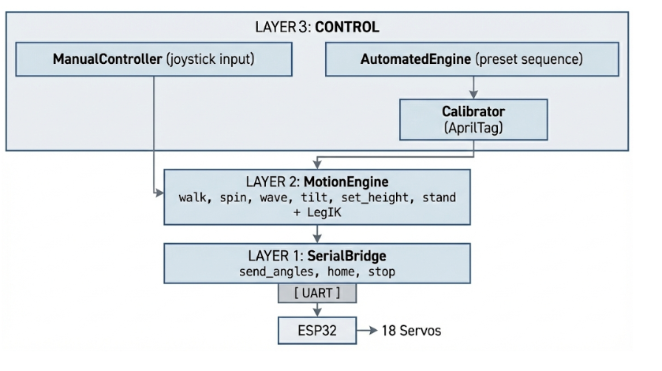

Full System Overview
The hexapod dancing robot is composed of four tightly integrated subsystems: Motor Control, Sensor, Software, and Mechanical. Together they enable the robot to walk, respond to rider input, maintain stability, and perform choreographed routines.

Motor Control Subsystem
The hexapod uses 18 brushless DC (BLDC) motors controlled by ODrive motor controllers — three per leg across six legs. Each leg consists of three joints:
- Coxa — Hip yaw joint, providing lateral rotation (high-torque motor)
- Femur — Hip pitch joint, providing vertical lift (lighter motor)
- Tibia — Knee pitch joint, controlling lower leg extension (lighter motor)
Motor Configuration
The motor selection uses a split strategy based on force requirements:
- 6 Coxa motors (high-torque): These bear the most load and require the highest torque output. Candidates under evaluation include the ODrive D6374 (150KV), D5065, and M8325S.
- 12 Femur/Tibia motors (lighter): Less force is needed for the femur and tibia joints. Candidates include the ODrive D5212S (300KV) and Kraken X44.
Force Analysis
- 150 lb payload → ~20 lb effective load after wheels + friction
- 2 riders = ~40 lb effective load
- After robot weight: ~40–50 lb total effective load
- × 3 stall margin = 120–150 lb-force required
- × 1.5 safety factor = 180–225 lb-force total
- ÷ 6 legs = 30–37.5 kg per leg
Motor Candidates Under Evaluation
| Motor | KV Rating | Application | Status |
|---|---|---|---|
| ODrive D6374 | 150 KV | Coxa (high-torque) | Evaluating |
| ODrive D5212S | 300 KV | Femur/Tibia (lighter) | Evaluating |
| ODrive D5065 | TBD | Coxa alternative | Evaluating |
| ODrive M8325S | TBD | Coxa alternative | Evaluating |
| Kraken X44 | TBD | Femur/Tibia alternative | Evaluating |
CAD renderings of the updated leg assemblies will be added once the motor selection is finalized.
Sensor Subsystem
- IMU (MPU6050): 6-axis inertial measurement unit sampled at 200 Hz, providing orientation estimation (roll/pitch/yaw) and flip detection for the SafetyMonitorTask.
- AprilTag Camera (Raspberry Pi): Downward-facing camera for AprilTag-based localization, providing pose estimates (x, y, yaw, confidence) used for calibration and autonomous navigation.
- Controller Inputs: Dual joysticks (direction + rotation), potentiometer (speed), and buttons (mode selection, e-stop), communicating via Bluetooth to the onboard ESP32.
Software Subsystem

Raspberry Pi — Layered Python Architecture
The Raspberry Pi runs a 4-layer software stack:
- Layer 1 — Hardware Abstraction:
SerialBridge(UART to ESP32: send angles, home, stop) andAprilTagTracker(camera-based pose estimation via downward-facing AprilTags). - Layer 2 — Motion Engine:
MotionEngine+LegIK— inverse kinematics solver, walk/spin/wave/tilt/height control. Shared by both manual and automated modes. - Layer 3 — Calibration:
Calibrator— uses AprilTag feedback to auto-correct walk distance and rotation accuracy. - Layer 4 — Control Modes:
ManualController— maps joystick inputs to MotionEngine calls (walk, spin, height, tilt, wave)AutomatedEngine— executes timed motion sequences with calibration corrections
ESP32 — FreeRTOS Real-Time Firmware
The ESP32 runs FreeRTOS with 6 concurrent tasks:
- BluetoothRxTask (high priority): Receives joystick commands from remote controller
- VisionRxTask (medium): Receives AprilTag pose data from Raspberry Pi via UART
- ImuTask (medium-high): Reads IMU at 200 Hz, computes orientation estimates
- ControlTask (high, periodic 100 Hz): Main control loop — determines manual vs. autonomous mode, applies stabilization, computes gait phase and IK
- ServoOutputTask (high): Converts joint angles to PWM signals, drives all 18 motors
- SafetyMonitorTask (highest): Monitors Bluetooth timeout and tilt threshold, triggers emergency stop
Communication Protocol
- Pi → ESP32 (UART 115200 baud):
M:a0,a1,...,a17(move 18 joints),H:(home),S:(stop),V:speed(speed),Q:(query) - ESP32 → Pi:
OK,ERR:type,ST:angles(status),IMU:roll,pitch,yaw,ax,ay,az - Controller → ESP32: Bluetooth at 50 Hz update rate
Mechanical Structure
- Body Shape: Rectangular platform for stable rider mounting and electronics housing
- Modular Design: Disassembles into ≤ 7 parts for easy transport
- Shipping: All parts fit in a 3 ft × 3 ft case
- Payload: Supports 170 lb rider at 2–3 ft height
- Materials: Aluminum frame with 3D-printed components for complex geometries
This page will be updated with progress photos, test results, and implementation details throughout the semester.